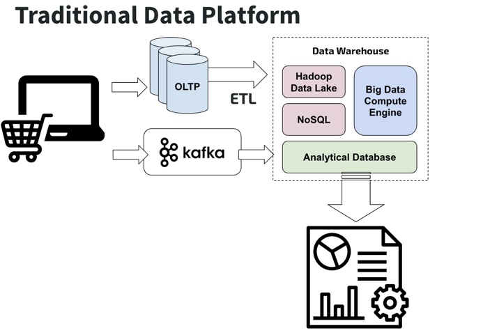
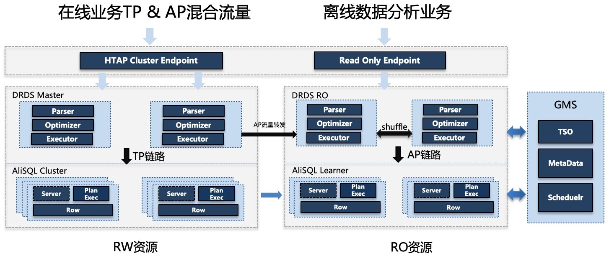
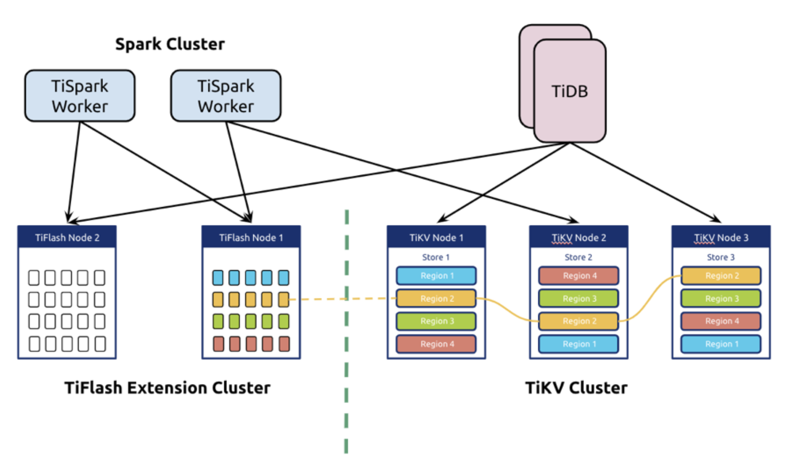
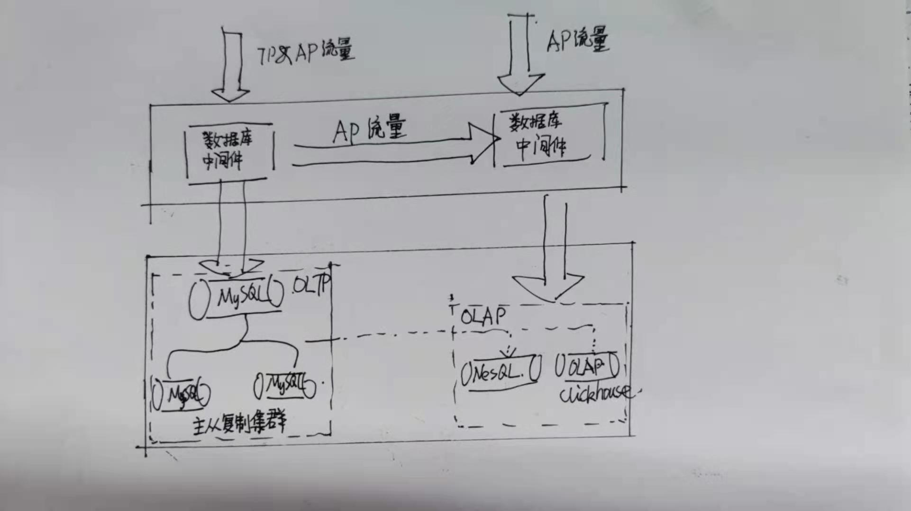

HATP 问题
问题定义
AP 的出现
在互联网浪潮出现之前，企业的数据量普遍不大。通常一个单机的数据库就可以保存核心的业务数据。那时候的存储并不需要复杂的架构，所有的线上请求(OLTP, Online Transactional Processing) 和后台分析 (OLAP, Online Analytical Processing) 都跑在同一个数据库实例上。后来业务越来越复杂，数据量越来越大，产生了一个显著问题：单机数据库支持线上的 TP 请求已经非常吃力，没办法再跑比较重的 AP 分析型任务，在这样的大背景下，于是AP开始从TP系统分离，某种程度上，AP是TP的一个分支。
这等于是在存储层做 CQRS 架构设计-另一种方案是在应用层也设计读写分离的架构。
AP的玩法
在这样的背景下，以 Hadoop 为代表的大数据技术开始蓬勃发展，它用许多相对廉价的 x86 机器构建了一个数据分析平台，用并行的能力破解大数据集的计算问题。
TP和AP的联系
虽然 TP 和 AP 开始往独立的方向演进，但是他们的核心都是需要处理数据，所以需要将数据打通。业内普遍玩法将 TP 数据通过 ETL 工具抽取出来，导入独立的 AP 分析系统。业务数据库专注提供 TP 能力，分析平台提供 AP 能力，各施其职。
AP

为什么需要HTAP
挑战
根据现在的架构，通过ETL桥接TP和AP，数据基本可以做到T+1（小时、天、周等）要求，解决了TP系统处理AP的性能及隔离难题，但也带了一些问题：
a）复杂性，TP和AP本身是非常独立的系统，中间搭建ETL的过程实际上是比较复杂的数据集成，业内比较知名的工具如sqoop、DataX、datapipeline，需要对数据二次开发；
b）实时性，ETL是周期性过程，一般按T+1时间来做数据同步，无法满足部分实时分析和统计需求（需要 OLAP 的在线业务越来越多）；
c）一致性，TP系统数据错乱，往往会导致AP系统在回溯数据时无法幂等，导致数据不一致；
由于以上局限性，HTAP（Hybrid Transactional/Analytical Processing）融合型数据库解决方案既能满足 OLTP 类需求，也满足 OLAP 类需求是非常有必要的。
定义
2014 年，Gartner 对 HTAP 数据库给出了明确的定义，HTAP 数据库需要同时支持 OLTP 和OLAP 场景。基于创新的计算存储框架，在同一份数据上保证事务的同时支持实时分析，省去了费时的 ETL 过程。从定义上可以看出他是希望一份数据不同引擎，但往往在实现时会百花齐放。
行业分析
业内头部公司已经针对HTAP开发单独解决方案，实现上各不相同，但有一个共同特点TP&AP隔离，要么计算&存储完全隔离，要么同一份数据，计算层隔离，总之隔离是趋势。
阿里
架构
PolarDB-X 2.0（原DRDS）实现了在线高并发OLTP联机事务处理以及OLAP海量数据分析，即HTAP。存储层扩展读节点，流量接入层统一调度，做到对用户基本透明。

特性
| 功能 | 方案 | 说明 |
|---|---|---|
| 复杂性 | TP和AP请求提供了统一接入层 | TP&AP统一入口，业务使用简单 |
| 隔离性 | 计算&存储独立的AP节点 | TP&AP完全隔离，不会互相影响 |
| 实时性 | 实时 | 基本完全实时 |
| 一致性 | 待确定 | 扩展性 |
| 扩展性 | 扩展读节点 | 理论上可以无限扩展 |
- 优点：实现复杂度可控；
- 缺点：虽然对用户使用非常友好，同时业务层TP&AP也完全隔离，但是因为AP节点还是行存，所以性能方面有一定缺陷（如压缩、速度等）；
PingCap
TIDB在4.0 支持了HTAP， TiSpark（计算层，同一份数据两个引擎），它可以直接读取 TiKV 的数据，利用 Spark 强大的计算能力来加强 AP 端的能力，然而由于 TiKV 毕竟是为 TP 场景设计的存储层，对于大批量数据的提取、分析能力有限，所以TiDB 引入了以新的 TiFlash 组件（存储层），从而完成存储和计算的完全隔离。
TiKV 是的 kv 是基于 map 的，map 又是按照 sstable 组织的，所以存在写放大的问题。
架构：

| 功能 | 方案 | 说明 |
|---|---|---|
| 数据复制 | 通过 Raft Learner 协议，从 TiKV 同步过来的 | 取消ETL过程，减少数据开发过程 |
| 复杂性 | TiSpark 和 TiDB均可以访问TiFlash数据 | TP&AP统一入口，业务使用简单 |
| 隔离性 | 计算&存储独立的AP节点 | TP&AP完全隔离，不会互相影响 |
| 实时性 | 实时 | 基本完全实时 |
| 一致性 | 强一致 | 有一定阻塞影响，并非走强一致同步 |
| 扩展性 | TiSpark 和TiFlash可以扩展 | 理论上可以无限扩展 |
- 优点：TiFlash 列式存储，TiSpark 和 TiFlash 扩展性较好，性能有较大优势；
- 缺点：实现复杂度较高；
总结
- 多节点复制，基于日志的方案是基础方案，业界现有的方案大致上有：
- 自带主从复制的日志方案，以 MySQL 主从复制为方案
- 基于方案 1 的自动选主的集群方案，以 Paxos 类实现为主
- 自己搭建桥接通道，把 tp 系统的数据，通过 mq 之类的数据通道引导到另一个异构系统，异构系统可以：
- 可以引入不同的计算层
- 可以引入不同的存储层（如把行存储转换为列存储）
使用 RDBMS 的 AP 节点最好可以无限扩展，方案进阶的方案有：
- 在线业务只（RO）读从库
- 离线业务统计从库
- 混合离在线的从库
传统的 OLAP 方案，是从 RDBMS 方案转入大数据生态套件的方案。但 HTAP 的出现，让数据库领域出现技术融合的现象。这种技术融合，可以让上层应用使用统一的 portal，使用 OLAP 和 OLTP 来解决自己的问题，不再有接入异构存储层的体验不一致的痛感。
读写的分离，产生的架构隔离，是工程上不可避免的-非这样无法保证 OLTP 侧的 SAL。但在抽象层次上抹去这种差异，又是一种 hybrid 方案 nice to have 的，所以存储支持基础的 JDBC 协议又是必然的，只有这样才能实现平滑升级。
